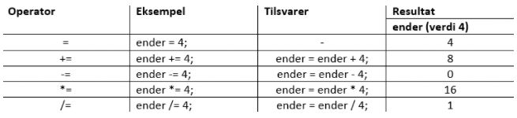

3.7 Tilordningsoperatorer
Som nevnt tidligere i kurset bruker man en tilordningsoperator til å sette eller endre verdien til en variabel. Man bruker da = tegnet. Det finner flere ulike operatorer av denne typen, og nedenfor kan du se en oversikt over de mest brukte.
Tabell av tilordningsoperatorer som brukes i JavaScript:
